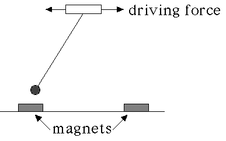
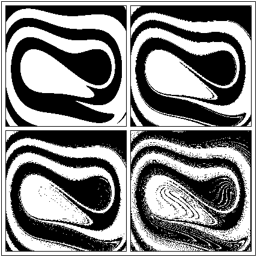
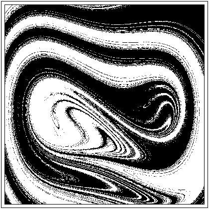

| Now suppose we drive the pendulum by shaking the support left and right. |
|  |
| As we increase the amplitude of the driving force (we keep the driving frequency fixed, though we could vary that, too), the phase plane portrait changes left to right, top to bottom, as shown. |
|  |
| Here is an enlarged view of the last picture. |
|  |
| Note the intricate interleaving of the white and black points. |
| The fractal nature of the boundaries of the basins of attraction make very difficult predicting the final state of the pendulum. |
| Any physical measurement involves some uncertainties, some errors in measurement, so we cannot know the starting conditions with infinite precision. |
| Better to think of the actual starting condition as a point somewhere in a small disc centered on the measured values of the starting condition. |
| We have no way of knowing from what point within that disc the pendulum actually starts. If the disc contains both black and white points, we cannot say over which magnet the pendulum will come to rest. |
Return to Mechanical Basin Boundaries.